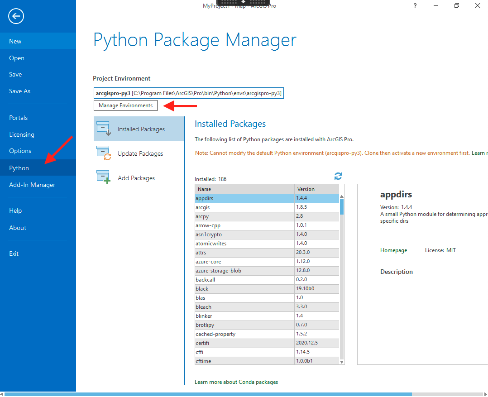
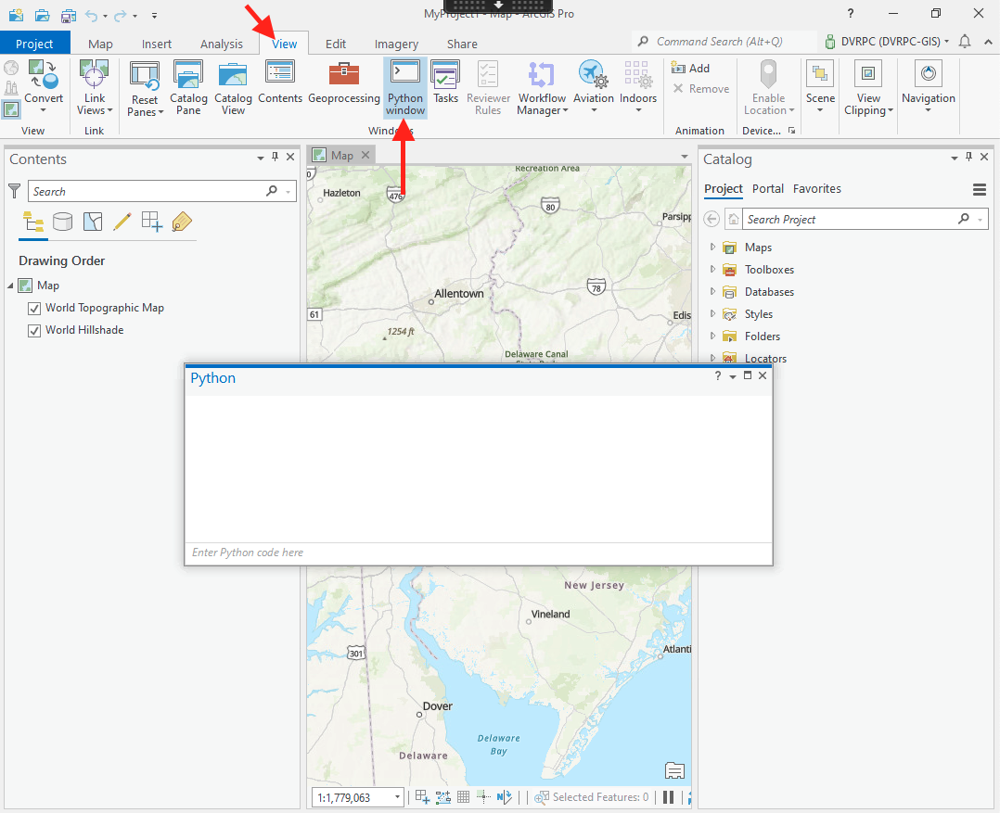
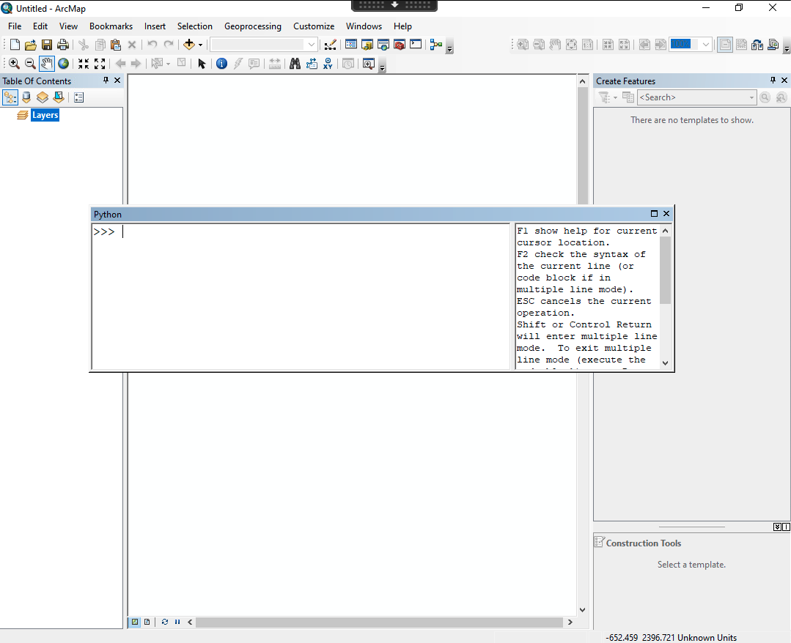

Using Python within ESRI products
Python is heavily integrated into ESRI's products. It's so integrated that ArcMap and ArcGIS Pro each ship with their own versions of Python. As a result, it can sometimes be challenging to use ESRI-authored Python libraries alongside open-source libraries.
ArcGIS Pro
ArcGIS Pro uses Python 3, along with its own version of the conda environment manager. The default installation path is C:\Program Files\ArcGIS\Pro\bin\Python\envs\arcgispro-py3
In your "Start" menu under "ArcGIS" you'll find a number of Python-related executables, including:
- IPython
- Jupyter Notebook
- Python Command Prompt
- Python Interactive Terminal
You can use the "Python Command Prompt" entry in your Start menu to manage Python
environments with conda. Note that this is a distinct conda instance that is unrelated to your miniconda3 installation, but works
in the same way. ESRI also provides an interface for environment management. To open it click "Project" in the top ribbon and then "Python" at left:

From the main ArcGIS Pro interface you can access a Python prompt by clicking the "View" ribbon and then "Python window":

Note: Although the ESRI module is still known as arcpy, many of the sub-modules and functions have new names, so Python code written for ArcMap 10.X might not work when run from ArcGIS Pro. When you're looking at the documentation, make sure it's for ArcGIS Pro and not ArcMap.
ArcMap 10.X
When ArcMap 10.8 is installed, it puts its own version of Python within C:\Python27\ArcGIS10.8\python.exe.
ArcMap uses Python 2.7, which has reached its end-of-life. The Python world at-large
has moved on from Python 2 and now uses Python 3. As a result, writing Python code
for ArcMap is only recommended if you need to programmatically manipulate the map design of a .mxd file. New geoprocessing scripts should use a more modern version of Python.
Using an IDE
If you want to write code with this environment using your IDE, point the Python interpreter to previously mentioned path. You'll need to load the arcpy module with the following line at the top of your script:
import arcpy
# ... the rest of your code goes here ...
Using the ArcMap integration
You can also open a Python prompt directly within ArcMap by clicking the Python button. When you do this, arcpy is already imported, so there's no need to run import arcpy
Look for a small white square in the top ribbon with a ">" character inside:

After clicking the icon a new window will appear, allowing you to enter Python commands one at a time. You can also right-click within the Python window and select "Load..." to load an entire Python script into the window.
